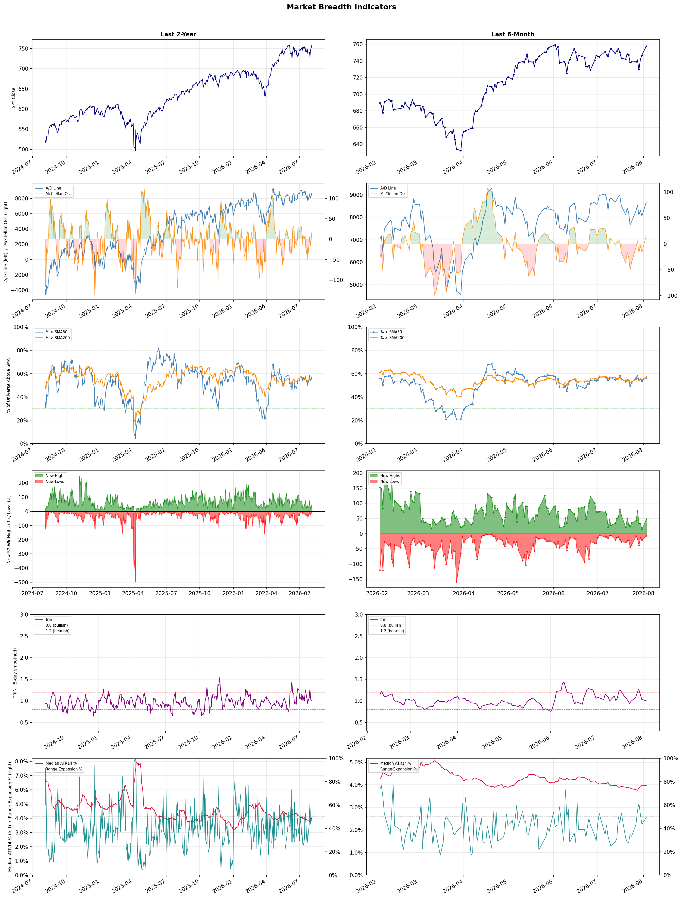

A daily market breadth and sector rotation report for active investors
| Item | Read |
|---|---|
| Regime | Selective Risk-On |
| Risk posture | Selective |
| Universe | 1,335 stocks tracked · 48 new 52-week highs · 30 active swing setups |
| Breadth | 56.6% of tracked stocks are above SMA50 — neutral range, new highs exceed new lows (48 vs 7) |
| Leadership | Oil & Gas Refining & Marketing, Insurance - Life, and Travel Services |
| Weakest groups | Other Industrial Metals & Mining, Uranium, and Aerospace & Defense |
Use this report to prioritize research and chart review; validate entries, stops, liquidity, earnings, and risk before acting.
| Item | Read |
|---|---|
| Primary read | Selective Risk-On regime with Selective risk posture. |
| Research queue | PBF, MPC, DINO, PSX, UGP |
| Leadership focus | Oil & Gas Refining & Marketing, Insurance - Life, and Travel Services |
| Caution list | Other Industrial Metals & Mining, Uranium, and Aerospace & Defense |
| Review prompt | Check extension risk, chart location, fundamentals, valuation, and earnings before using any research row. |
| Item | Read |
|---|---|
| Primary read | 0 active risk warnings; use screen output as watchlist input only. |
| Bullish screens | CCL, DRH, BBVA, DXCM, FSLY |
| Bearish screens | HTZ, STWD |
| Alerts / levels | Automated trigger, stop, ATR, liquidity, reward/risk, and event-risk levels are pending future enrichment. |
| Review prompt | Open the linked chart, define trigger and invalidation, then check liquidity and event risk independently. |
Risk Posture: Selective — screen backdrop supports selective research in leading industries
Metric context: McClellan below -50 = elevated selling pressure; below -100 = washout territory. Range Expansion = share of stocks with daily range above their 20-day average. Signal Density = share of tracked names appearing in signal screens.
| Breadth Date | % > SMA50 | % > SMA200 | New Highs | New Lows | McClellan | Median Range | Avg Range | Median ATR14 | Range Expansion | Signal Density |
|---|---|---|---|---|---|---|---|---|---|---|
| 2026-08-03 | 56.6% | 57.4% | 48 | 7 | 16.5 | 3.6% | 4.4% | 4.0% | 49.2% | 3.3% |

Prior comparison date: July 31, 2026
| Metric | Prior | Current | Change |
|---|---|---|---|
| Regime | Neutral | Selective Risk-On | changed |
| Risk Posture | Cautious | Selective | changed |
| % > SMA50 | 53.7% | 56.6% | +2.9 pts |
| % > SMA200 | 55.0% | 57.4% | +2.3 pts |
| New Highs | 15 | 48 | +33 |
| New Lows | 21 | 7 | +14 |
Top-10 industries entering: Medical Devices and Medical Instruments & Supplies. Top-10 industries leaving: Leisure and REIT - Healthcare Facilities. New multi-signal long setups: AVTX, BMY, CCL, DRH, DXCM, EWTX, GTES, IVZ, MPLX. New multi-signal short setups: HTZ.
| Status | Tickers | Read |
|---|---|---|
| Added | AVTX, BMY, DRH, DXCM, EWTX, GTES, HTZ, IVZ | New technical screen matches vs prior report. |
| Removed | BFLY, BP, BRSL, BXMT, ELVN, HNGE, HPE, KOS | No longer present in today's technical screen matches. |
| Still Active | AS, BBVA, CCL, FSLY, LNG, PGEN, PSNL, STWD | Appeared in both current and prior reports. |
| Promoted | CCL | Model Screen Score improved by at least 15 points. |
| Downgraded | BBVA | Model Screen Score declined by at least 15 points. |
| Direction | Industry | ETF | Prior Rank | Current Rank | Days | Rank Change |
|---|---|---|---|---|---|---|
| Rose | Oil & Gas Integrated | XLE | 82 | 7 | 28 | +75 |
| Rose | Oil & Gas Refining & Marketing | CRAK | 68 | 1 | 42 | +67 |
| Rose | Insurance Brokers | N/A | 78 | 11 | 42 | +67 |
| Rose | Apparel Retail | XRT | 71 | 4 | 28 | +67 |
| Rose | Software - Application | IGV | 73 | 12 | 42 | +61 |
Bull: The Oil & Gas Integrated sector is likely experiencing a rise in relative strength due to increasing fair value estimates for major oil stocks, driven by higher oil prices, as highlighted by Morningstar. This bullish sentiment is further supported by articles suggesting that oil stocks could benefit from these rising prices, indicating a favorable outlook for the sector despite recent short-term fluctuations in stock prices. As investors anticipate sustained demand and profitability in the oil market, the sector's resilience is becoming increasingly evident.
Bear: While rising oil prices may temporarily boost fair value estimates for major oil stocks, the recent trend of energy stocks falling indicates underlying weakness and volatility in investor sentiment. Additionally, concerns about long-term demand due to the global shift towards renewable energy, regulatory pressures, and potential economic slowdowns could undermine the sector's resilience, making the bullish outlook overly optimistic. The recent headlines suggest a lack of sustained confidence in the sector, which could lead to further declines in stock prices despite short-term fluctuations.
Verdict: The Oil & Gas Integrated sector's rise is fundamentally driven by increasing oil prices, which enhance fair value estimates for major oil stocks and signal sustained demand and profitability. However, the key risk lies in the potential for long-term demand erosion due to the global shift towards renewable energy and regulatory pressures, which could undermine the sector's stability and lead to further declines in stock prices if investor sentiment shifts. Investors should closely monitor these dynamics while considering exposure to the sector.
Sources: Yahoo Finance, Google News
Bull: The Oil & Gas Refining & Marketing sector, as evidenced by the recent performance of the CRAK ETF hitting a new 52-week high, is likely benefiting from a combination of rising oil prices and improved refining margins, driven by increased demand amid geopolitical tensions and hopes for Middle East de-escalation. Additionally, the sector's resurgence after years of underperformance suggests a structural shift, with companies like Marathon Petroleum outperforming their peers, indicating a robust recovery and investor confidence in the industry's ability to navigate energy uncertainties effectively.
Bear: While the recent performance of the CRAK ETF hitting a new 52-week high may seem promising, it is crucial to recognize that this surge is largely driven by short-term factors such as geopolitical tensions and temporary spikes in oil prices, which could reverse quickly. Additionally, the refining sector faces significant headwinds from increasing regulatory pressures, a potential shift towards renewable energy, and the looming threat of demand destruction due to economic slowdowns, which could undermine the sustainability of this rally and expose the sector to heightened volatility.
Verdict: The Oil & Gas Refining & Marketing sector's recent rise, highlighted by the CRAK ETF reaching a new 52-week high, is fundamentally supported by increasing oil prices and improved refining margins resulting from heightened demand amid geopolitical tensions. However, investors should remain cautious of the key risk posed by potential demand destruction from economic slowdowns and the ongoing transition towards renewable energy, which could undermine the sector's recovery and lead to increased volatility.
Sources: Yahoo Finance, Google News
Bull: The Insurance Brokers industry is experiencing a rising relative strength primarily due to its resilience in the face of macroeconomic challenges and technological disruptions, as evidenced by strong earnings reports like Ryan Specialty's impressive Q1 performance. While recent headlines highlight fears around AI disruption, the industry's fundamentals remain robust, with analysts identifying key stocks poised for growth, suggesting that the market is recognizing the long-term value and adaptability of insurance brokers amidst evolving market conditions. This combination of solid earnings and strategic positioning against technological changes supports a bullish outlook for the sector.
Bear: While the bull thesis emphasizes resilience and strong earnings, the recent headlines indicate significant disruption fears stemming from AI advancements, which could fundamentally alter the insurance brokerage landscape. The decline from five-year highs and compressing multiples suggest that the market is already pricing in these risks, indicating that the industry's historical stability may be under threat as technological innovations could lead to increased competition and margin pressures. Furthermore, even strong earnings from select companies like Ryan Specialty may not be indicative of the broader industry's ability to adapt, as the potential for widespread disruption could overshadow isolated successes.
Verdict: The Insurance Brokers industry is experiencing rising relative strength due to its ability to deliver strong earnings, as seen in Ryan Specialty's Q1 performance, while also demonstrating resilience against macroeconomic challenges. However, a key risk remains the potential for AI advancements to disrupt traditional brokerage models, leading to increased competition and margin pressures that could undermine the industry's historical stability. Investors should closely monitor technological developments and their impact on the broader market to make informed decisions.
Sources: Google News
Bull: The Apparel Retail sector is experiencing a rising relative strength primarily due to positive sentiment in the broader market, as indicated by the recent headlines about equity futures moving higher amid hopes for geopolitical stability (US-Iran truce) and strong earnings reports from major players like Amazon, which help bolster consumer confidence. Additionally, the focus on growth potential within the industry, highlighted by articles discussing the best apparel stocks for 2026 and the promising outlook for footwear and retail apparel, suggests that investors are increasingly optimistic about the sector's ability to capitalize on consumer spending trends as the economy stabilizes.
Bear: While the rising relative strength in the Apparel Retail sector may appear promising, it is crucial to consider the underlying vulnerabilities, such as potential inflationary pressures and changing consumer spending habits. The optimism fueled by positive headlines may be short-lived, as rising interest rates and economic uncertainty could dampen discretionary spending, particularly in the apparel sector, which is often sensitive to shifts in consumer confidence. Furthermore, the focus on growth potential may overlook the challenges posed by supply chain disruptions and increased competition from e-commerce giants, which could erode margins and profitability for traditional retailers.
Verdict: The Apparel Retail sector's rising relative strength is primarily driven by positive market sentiment stemming from geopolitical stability and strong earnings reports, which bolster consumer confidence and spending potential. However, investors should remain cautious of the key risk posed by inflationary pressures and rising interest rates, which could significantly impact discretionary spending and profitability, particularly for traditional retailers facing increased competition from e-commerce.
Sources: Yahoo Finance, Google News
Bull: The Software - Application sector is experiencing rising relative strength primarily due to a favorable shift in investor sentiment, as indicated by the rotation towards software stocks ahead of key earnings reports, such as Palantir's. Additionally, the broader tech sector is benefiting from positive momentum driven by strong performances in related industries, like chip stocks, which are enhancing overall market confidence in technology investments. The ongoing AI boom further amplifies this trend, as it creates significant growth opportunities for application software companies, positioning them as essential players in the evolving tech landscape.
Bear: While the rising relative strength in the Software - Application sector may appear promising, it is essential to recognize that this uptick is largely driven by short-term investor sentiment and speculative trading rather than fundamental growth. The broader tech sector's reliance on chip stocks for momentum could be misleading, as any weakness in semiconductor supply or demand could quickly dampen enthusiasm for software stocks. Furthermore, the AI boom, while creating opportunities, also intensifies competition and could lead to overvaluation in the sector, making many software companies vulnerable to a correction as reality sets in.
Verdict: The Software - Application sector's rising relative strength is fundamentally driven by heightened investor sentiment and the ongoing AI boom, which is creating substantial growth opportunities for these companies. However, a key risk lies in the sector's reliance on short-term trends and the potential for overvaluation, particularly if semiconductor supply issues arise or if heightened competition leads to a market correction. Investors should remain cautious and consider the sustainability of growth in the face of these challenges.
Sources: Yahoo Finance, Google News
| Direction | Industry | ETF | Prior Rank | Current Rank | Days | Rank Change |
|---|---|---|---|---|---|---|
| Fell | Semiconductors | SOXX | 5 | 79 | 42 | -74 |
| Fell | Electrical Equipment & Parts | XLI | 11 | 83 | 42 | -72 |
| Fell | Electronic Components | XLK | 3 | 74 | 42 | -71 |
| Fell | Semiconductor Equipment & Materials | SOXX | 2 | 71 | 42 | -69 |
| Fell | Communication Equipment | IYZ | 18 | 73 | 42 | -55 |
Bear: While the bull analyst attributes the semiconductor industry's decline to heightened competition and market volatility, it overlooks the fundamental challenges that persist in the sector, including supply chain disruptions and geopolitical tensions that could further exacerbate competition from China. Additionally, the sell-off of over $1 trillion in chip stocks indicates a deeper loss of investor confidence, suggesting that the growth narrative around AI may be overstated, especially as companies like AMD struggle to gain meaningful market share against entrenched players like Nvidia. This environment raises concerns about the overall sustainability of the semiconductor market's recovery.
Bull: The semiconductor industry is experiencing a decline in relative strength primarily due to heightened competition fears from China, which has led to increased uncertainty in the market, as highlighted in the recent headlines. Additionally, the significant sell-off, resulting in a loss of over $1 trillion in chip stocks, reflects investor concerns about the sustainability of growth driven by AI, particularly as companies like AMD are positioning themselves to compete more aggressively with established players like Nvidia. This backdrop of competitive pressure and market volatility is weighing heavily on semiconductor stocks, despite some positive movements in related sectors like optics.
Verdict: The semiconductor industry's decline is primarily driven by heightened competition fears, particularly from China, coupled with significant sell-offs that have eroded investor confidence. Key risks include persistent supply chain disruptions and geopolitical tensions, which could further challenge market stability and the growth narrative surrounding AI, particularly as companies like AMD face difficulties in gaining market share against established players like Nvidia. Investors should closely monitor these dynamics and consider a cautious approach to semiconductor stocks until clearer signals of recovery emerge.
Sources: Yahoo Finance, Google News
Bear: While the U.S. manufacturing industry may be experiencing a resurgence, the Electrical Equipment & Parts sector faces significant headwinds that could undermine its growth potential. The rising valuations in the tech sector may divert capital away from industrials, leading to a prolonged period of underperformance for electrical equipment stocks. Furthermore, geopolitical uncertainties, such as the US-Iran truce, could create volatility that disproportionately affects industrials, which are often sensitive to global supply chain disruptions and fluctuating demand.
Bull: The relative weakness of the Electrical Equipment & Parts sector can be attributed to broader market dynamics, particularly the strong performance of the U.S. manufacturing industry, which may be overshadowing the sector's growth potential. Additionally, the headlines indicate a bullish sentiment in other sectors, like technology, where industrials are becoming as valued as tech stocks, suggesting a rotation of investor interest away from electrical equipment towards higher-growth areas. This shift, combined with geopolitical factors such as US-Iran truce hopes influencing market sentiment, could be contributing to the relative decline in strength for the Electrical Equipment & Parts industry.
Verdict: The Electrical Equipment & Parts sector is likely experiencing a downturn due to a combination of shifting investor sentiment towards higher-growth sectors like technology and the potential for geopolitical uncertainties to disrupt supply chains. The key risk from the bear case lies in the rising valuations of tech stocks, which may continue to divert investment away from industrials, leading to prolonged underperformance in the electrical equipment space. Investors should closely monitor these dynamics and consider reallocating funds to sectors with stronger growth prospects while being cautious of geopolitical developments that could impact industrial performance.
Sources: Yahoo Finance, Google News
Bear: While the bull analyst attributes the sector's relative weakness to mixed performance and geopolitical factors, a more pressing concern is the underlying demand dynamics within the electronic components industry. The ongoing supply chain disruptions and rising costs of raw materials are likely to squeeze margins, while the potential slowdown in consumer spending as inflation persists could further dampen demand for electronic components. This suggests that the sector may face sustained challenges that are not merely temporary fluctuations, undermining the bullish outlook.
Bull: The relative weakness in the Electronic Components sector may be attributed to mixed performance in tech stocks, as indicated by the headlines suggesting a divergence in sector updates and the mixed late-afternoon performance of tech stocks. Additionally, uncertainty surrounding specific companies, such as Western Digital, and broader geopolitical factors, like US-Iran truce hopes, could be contributing to investor caution, impacting the overall sentiment in the electronic components industry. This environment may lead to volatility and hesitation among investors, affecting the sector's relative strength compared to others.
Verdict: The electronic components industry is experiencing a downturn primarily due to persistent supply chain disruptions and rising raw material costs, which are squeezing margins and dampening demand amid ongoing inflationary pressures. While geopolitical factors and mixed tech stock performance contribute to investor caution, the key risk lies in the potential for sustained declines in consumer spending, which could exacerbate the industry's challenges and hinder recovery. Investors should closely monitor consumer sentiment and raw material trends to gauge the sector's trajectory.
Sources: Yahoo Finance, Google News
Bear: While the bullish sentiment from industry leaders may suggest optimism, the reality is that the semiconductor sector is facing significant headwinds, particularly from increased competition from China, which threatens to erode market share and pricing power for established players. Additionally, the recent sector-wide selling, highlighted by Axcelis Technologies' steep decline and the mixed performance of key stocks like Applied Materials, indicates a lack of investor confidence and suggests that the supposed "unprecedented era" may be more hype than reality, especially as economic uncertainties loom and demand for semiconductors could soften.
Bull: The Semiconductor Equipment & Materials sector is experiencing a decline in relative strength primarily due to heightened concerns over increased competition from China, as indicated by the headline regarding fears in the semiconductor market. This uncertainty is compounded by sector-wide selling, exemplified by Axcelis Technologies' notable drop, and the mixed performance of major players like Applied Materials, which fell nearly 5%. However, despite these challenges, the bullish sentiment remains strong as industry leaders assert that we are in an unprecedented era for semiconductors, suggesting potential for recovery and growth amidst current volatility.
Verdict: The semiconductor equipment and materials sector is currently facing a downturn primarily due to heightened competition from China, which poses a significant risk to market share and pricing power for established companies. This, combined with sector-wide selling and mixed performance from major players, suggests a lack of investor confidence and potential softening demand amid economic uncertainties. Investors should remain cautious and closely monitor developments in competitive dynamics and overall market conditions before making investment decisions in this sector.
Sources: Yahoo Finance, Google News
Bear: While the bull analyst highlights potential growth in 5G technologies and select stocks, the broader trend of declining relative strength in the Communication Equipment sector indicates deeper, systemic issues that cannot be overlooked. The recent drop in Viasat's stock amidst sector-wide selling suggests that investor sentiment is turning bearish, reflecting concerns over profitability and market saturation. Furthermore, the reallocation of defense spending could divert critical resources away from communication infrastructure investments, further exacerbating the challenges faced by the sector.
Bull: The Communication Equipment sector is experiencing a decline in relative strength primarily due to broader market concerns, including the impact of defense spending reallocations, as highlighted in the headline about defense spending extending beyond defense ETFs. Additionally, the sector faces challenges from specific companies like Viasat, which recently dropped 5.8%, indicating sector-wide selling pressure. However, the outlook remains bullish for select stocks, as noted in multiple articles emphasizing potential growth in 5G technologies and inherent sector strengths that could drive recovery and profitability in the long term.
Verdict: The Communication Equipment sector is experiencing a decline primarily due to broader market concerns, including the reallocation of defense spending, which could limit investment in communication infrastructure. While there are bullish prospects related to 5G technologies, the key risk remains that ongoing investor sentiment and market saturation may overshadow these opportunities, leading to further declines in stock prices and profitability. Investors should closely monitor developments in defense spending and the performance of key players like Viasat to gauge the sector's recovery potential.
Sources: Yahoo Finance, Google News
| Industry | Rank | ETF | 7d | 14d | 28d | 42d | Chg 42d | Size | 20D | 60D | Composite | Active Setups |
|---|---|---|---|---|---|---|---|---|---|---|---|---|
| Oil & Gas Refining & Marketing | 1 | CRAK | 1 | 1 | 30 | 68 | +67 | 7 | 18.2% | 21.0% | 0.963 | 0 |
| Insurance - Life | 2 | N/A | 5 | 11 | 21 | 44 | +42 | 7 | 8.1% | 12.6% | 0.883 | 0 |
| Travel Services | 3 | N/A | 23 | 31 | 36 | 19 | +16 | 10 | 6.6% | 11.2% | 0.846 | 1 |
| Apparel Retail | 4 | XRT | 33 | 42 | 71 | 38 | +34 | 8 | 11.6% | 14.1% | 0.834 | 1 |
| Diagnostics & Research | 5 | N/A | 20 | 3 | 4 | 12 | +7 | 16 | 1.7% | 44.6% | 0.826 | 1 |
| REIT - Hotel & Motel | 6 | XLRE | 12 | 12 | 11 | 7 | +1 | 9 | 4.1% | 23.4% | 0.817 | 0 |
| Oil & Gas Integrated | 7 | XLE | 16 | 26 | 82 | 77 | +70 | 10 | 17.2% | 5.5% | 0.811 | 0 |
| Banks - Diversified | 8 | N/A | 2 | 17 | 10 | 10 | +2 | 16 | 2.4% | 15.6% | 0.805 | 0 |
| Medical Devices | 9 | N/A | 36 | 40 | 27 | 55 | +46 | 21 | 4.9% | 20.4% | 0.803 | 1 |
| Medical Instruments & Supplies | 10 | N/A | 28 | 25 | 22 | 65 | +55 | 13 | 7.0% | 23.0% | 0.791 | 0 |
Rank columns (7d–42d) show the industry's rank that many trading days ago — lower is stronger. Chg 42d = rank change vs 42 trading days ago — positive means the industry moved up. 20D and 60D are the mean stock return within the industry over that period. Active Setups: count of today's swing-trade candidates from this industry appearing across all signal screens.
| Industry | Rank | ETF | 7d | 14d | 28d | 42d | Chg 42d | Size | 20D | 60D | Composite | Active Setups |
|---|---|---|---|---|---|---|---|---|---|---|---|---|
| Other Industrial Metals & Mining | 88 | N/A | 87 | 88 | 83 | 46 | -42 | 21 | -13.6% | -32.0% | 0.057 | 0 |
| Uranium | 87 | URA | 88 | 87 | 88 | 80 | -7 | 6 | -8.0% | -32.6% | 0.059 | 0 |
| Aerospace & Defense | 86 | ITA | 81 | 85 | 70 | 75 | -11 | 26 | -13.4% | -15.0% | 0.141 | 0 |
| Gold | 85 | GDX | 82 | 86 | 87 | 85 | 0 | 26 | -5.0% | -20.9% | 0.141 | 0 |
| Chemicals | 84 | N/A | 84 | 81 | 86 | 82 | -2 | 8 | -4.7% | -28.9% | 0.148 | 1 |
| Electrical Equipment & Parts | 83 | XLI | 85 | 80 | 41 | 11 | -72 | 12 | -21.8% | -18.7% | 0.153 | 0 |
| Solar | 82 | TAN | 83 | 78 | 61 | 30 | -52 | 8 | -12.7% | -5.6% | 0.165 | 0 |
| Utilities - Renewable | 81 | N/A | 86 | 83 | 76 | 41 | -40 | 7 | -10.3% | -14.3% | 0.169 | 0 |
| Utilities - Independent Power Producers | 80 | XLU | 79 | 79 | 75 | 57 | -23 | 5 | -4.2% | -15.3% | 0.172 | 0 |
| Semiconductors | 79 | SOXX | 69 | 59 | 35 | 5 | -74 | 38 | -15.7% | -8.4% | 0.235 | 0 |
Rank columns (7d–42d) show the industry's rank that many trading days ago — lower is stronger. Chg 42d = rank change vs 42 trading days ago — positive means the industry moved up. 20D and 60D are the mean stock return within the industry over that period. Active Setups: count of today's swing-trade candidates from this industry appearing across all signal screens.
These are research candidates from top-ranked stocks, capped at five names per industry to avoid over-concentration. Returns shown (60D, 120D, 250D) are historical — they reflect where prices have already moved, not forward expectations. Extension Risk flags names that may require extra patience or a better entry point. They are not buy signals.
Chart: TV = TradingView chart (opens in browser); PDF = local chart file (if downloaded).
| Ticker | Name | Industry | Industry Rank | Market Cap | 60D Hist | 120D Hist | 250D Hist | Extension Risk | Research Reason | Chart |
|---|---|---|---|---|---|---|---|---|---|---|
| PBF | PBF Energy | Oil & Gas Refining & Marketing | 1 | N/A | 63.3% | 92.6% | 191.8% | Extended | Top-ranked in industry; extended | TV |
| MPC | Marathon Petroleum | Oil & Gas Refining & Marketing | 1 | N/A | 24.9% | 50.3% | 82.8% | Constructive | Top-ranked in industry | TV |
| DINO | HF Sinclair | Oil & Gas Refining & Marketing | 1 | N/A | 24.7% | 52.3% | 102.5% | Constructive | Top-ranked in industry | TV |
| PSX | Phillips 66 | Oil & Gas Refining & Marketing | 1 | N/A | 20.1% | 30.9% | 69.8% | Constructive | Top-ranked in industry | TV |
| UGP | Ultrapar Participacoes | Oil & Gas Refining & Marketing | 1 | N/A | 8.3% | 25.8% | 113.5% | Constructive | Top-ranked in industry | TV |
| PRU | Prudential Financial | Insurance - Life | 2 | N/A | 22.8% | 20.3% | 20.9% | Constructive | Top-ranked in industry | TV |
| LNC | Lincoln National | Insurance - Life | 2 | N/A | 22.5% | 16.1% | 21.5% | Constructive | Top-ranked in industry | TV |
| MET | MetLife | Insurance - Life | 2 | N/A | 20.1% | 26.3% | 28.7% | Constructive | Top-ranked in industry | TV |
| MFC | Manulife Financial | Insurance - Life | 2 | N/A | 11.4% | 17.1% | 44.2% | Constructive | Top-ranked in industry | TV |
| PUK | Prudential | Insurance - Life | 2 | N/A | -7.1% | -8.1% | 18.7% | Lagging | Top-ranked in industry; lagging | TV |
| VIK | Viking Holdings | Travel Services | 3 | N/A | 23.7% | 38.2% | 80.9% | Constructive | Top-ranked in industry | TV |
| EXPE | Expedia | Travel Services | 3 | N/A | 20.8% | 26.0% | 61.1% | Constructive | Top-ranked in industry | TV |
| BKNG | Booking Holdings | Travel Services | 3 | N/A | 14.5% | 13.7% | -12.0% | Constructive | Top-ranked in industry | TV |
| RCL | Royal Caribbean | Travel Services | 3 | N/A | 12.9% | -6.9% | 2.6% | Constructive | Top-ranked in industry | TV |
| TCOM | Trip.com | Travel Services | 3 | N/A | -13.1% | -19.3% | -23.8% | Lagging | Top-ranked in industry; lagging | TV |
| VSXY | Victoria's Secret | Apparel Retail | 4 | N/A | 73.0% | 44.2% | 333.4% | Extended | Top-ranked in industry; extended | TV |
| ANF | Abercrombie & Fitch | Apparel Retail | 4 | N/A | 37.1% | 17.3% | 9.8% | Constructive | Top-ranked in industry | TV |
| ROST | Ross Stores | Apparel Retail | 4 | N/A | 10.5% | 30.0% | 78.1% | Constructive | Top-ranked in industry | TV |
| URBN | Urban Outfitters | Apparel Retail | 4 | N/A | 8.5% | 9.1% | -1.8% | Constructive | Top-ranked in industry | TV |
| AEO | American Eagle Outfitters | Apparel Retail | 4 | N/A | 5.7% | -24.2% | 34.6% | Constructive | Top-ranked in industry | TV |
These are technical screen matches from existing signal files. They are not trade recommendations. Trigger, stop, ATR, liquidity, reward/risk, and event risk still require separate validation until those inputs are available.
Model Screen Score is weighted by signal count, industry rank, freshness, and setup type. It is not a probability of profit, expected return, or suitability rating. Industry cap: max 3 candidates per industry.
Signal glossary: Momentum Pullback = stock in an uptrend that has pulled back 10–30% and shows re-entry conditions. MA Compression = short- and long-term moving averages converging, often preceding a directional move. Three-Day Up/Down = three consecutive closes in the same direction. New 52Wk High/Low = price reached a new annual extreme.
Chart: TV = TradingView chart (opens in browser); PDF = local chart file (if downloaded).
| Ticker | Industry | Setups | Close | Industry Rank | Signal Count | Model Screen Score | Reason | Chart |
|---|---|---|---|---|---|---|---|---|
| CCL | Travel Services | MA Compression; Three-Day Up | 28.74 | 3 | 2 | 95 | Multi-signal; top industry setup | TV |
| DRH | REIT - Hotel & Motel | New 52Wk High; Three-Day Up | 13.38 | 6 | 2 | 93 | Multi-signal; top industry breakout | TV |
| BBVA | Banks - Diversified | New 52Wk High; Three-Day Up | 28.36 | 8 | 2 | 85 | Multi-signal; top industry breakout | TV |
| DXCM | Medical Devices | New 52Wk High; Three-Day Up | 87.31 | 9 | 2 | 85 | Multi-signal; top industry breakout | TV |
| FSLY | Software - Application | Momentum Pullback; Three-Day Up | 23.03 | 12 | 2 | 85 | Multi-signal; pullback setup | TV |
| MT | Steel | New 52Wk High; Three-Day Up | 71.83 | 24 | 2 | 77 | Multi-signal; new-high strength | TV |
| MPLX | Oil & Gas Midstream | MA Compression; Three-Day Up | 58.91 | 18 | 2 | 72 | Multi-signal; compression setup | TV |
| NTAP | Software - Infrastructure | New 52Wk High; Three-Day Up | 182.92 | 28 | 2 | 70 | Multi-signal; new-high strength | TV |
| S | Software - Infrastructure | New 52Wk High; Three-Day Up | 20.05 | 28 | 2 | 70 | Multi-signal; new-high strength | TV |
| NWG | Banks - Regional | New 52Wk High; Three-Day Up | 19.42 | 30 | 2 | 70 | Multi-signal; new-high strength | TV |
| SFNC | Banks - Regional | New 52Wk High; Three-Day Up | 23.86 | 30 | 2 | 70 | Multi-signal; new-high strength | TV |
| IVZ | Asset Management | New 52Wk High; Three-Day Up | 30.91 | 33 | 2 | 70 | Multi-signal; new-high strength | TV |
| RJF | Asset Management | New 52Wk High; Three-Day Up | 177.68 | 33 | 2 | 70 | Multi-signal; new-high strength | TV |
| WT | Asset Management | New 52Wk High; Three-Day Up | 20.99 | 33 | 2 | 70 | Multi-signal; new-high strength | TV |
| MTCH | Internet Content & Information | New 52Wk High; Three-Day Up | 40.54 | 41 | 2 | 65 | Multi-signal; new-high strength | TV |
| BMY | Drug Manufacturers - General | New 52Wk High; Three-Day Up | 65.47 | 44 | 2 | 65 | Multi-signal; new-high strength | TV |
| UMAC | Computer Hardware | Momentum Pullback; Three-Day Up | 23.08 | 48 | 2 | 65 | Multi-signal; pullback setup | TV |
| PGEN | Biotechnology | New 52Wk High; Three-Day Up | 6.61 | 50 | 2 | 65 | Multi-signal; new-high strength | TV |
| WY | REIT - Specialty | MA Compression; Three-Day Up | 25.23 | 56 | 2 | 60 | Multi-signal; compression setup | TV |
| GTES | Specialty Industrial Machinery | New 52Wk High; Three-Day Up | 29.38 | 78 | 2 | 55 | Multi-signal; new-high strength | TV |
| AVTX | Biotechnology | Momentum Pullback | 18.05 | 50 | 2 | 50 | Multi-signal; pullback setup | TV |
| EWTX | Biotechnology | Momentum Pullback | 38.38 | 50 | 2 | 50 | Multi-signal; pullback setup | TV |
| PSNL | Diagnostics & Research | Momentum Pullback | 13.20 | 5 | 1 | 58 | Single-signal; top industry pullback | TV |
| TJX | Apparel Retail | MA Compression | 157.50 | 4 | 1 | 53 | Single-signal; top industry setup | TV |
| URBN | Apparel Retail | MA Compression | 77.69 | 4 | 1 | 53 | Single-signal; top industry setup | TV |
| ZBH | Medical Devices | MA Compression | 96.98 | 9 | 1 | 45 | Single-signal; top industry setup | TV |
| AS | Leisure | MA Compression | 36.20 | 14 | 1 | 45 | Single-signal; compression setup | TV |
| LNG | Oil & Gas Midstream | Momentum Pullback | 258.08 | 18 | 1 | 42 | Single-signal; pullback setup | TV |
Bearish setups — stocks making new lows or showing persistent downside patterns. Validate carefully before acting.
| Ticker | Industry | Setups | Close | Industry Rank | Signal Count | Model Screen Score | Reason | Chart |
|---|---|---|---|---|---|---|---|---|
| HTZ | Rental & Leasing Services | New 52Wk Low; Three-Day Down | 1.53 | 55 | 2 | 35 | Multi-signal; new-low weakness | TV |
| STWD | REIT - Mortgage | New 52Wk Low; Three-Day Down | 15.97 | 77 | 2 | 25 | Multi-signal; new-low weakness | TV |
How To Use This Report
| Use | Purpose |
|---|---|
| Market map | Start with breadth, regime, risk warnings, and what changed since the prior report. |
| Industry scan | Use leading, deteriorating, rising, and declining industries to focus research. |
| Research queue | Treat long-term candidates as names for deeper fundamental, valuation, and chart review. |
| Technical review | Treat bullish and bearish screen matches as watchlist inputs that require independent trigger, stop, liquidity, and event-risk checks. |
| Source follow-up | Use chart links and source files to verify raw inputs before relying on any row. |
What This Report Is Not
| Not | Meaning |
|---|---|
| Investment advice | The report does not evaluate personal objectives, risk tolerance, tax situation, account type, or suitability. |
| Buy/sell recommendation | Named tickers are research candidates or screen matches, not recommendations to transact. |
| Price target | The report does not provide fair value estimates, targets, or expected returns. |
| Trade plan | Trigger, stop, sizing, reward/risk, liquidity, and event-risk review remain separate user work. |
| Performance claim | Model Screen Score is not validated historical performance or a forecast of future results. |
| Item | Note |
|---|---|
| Version | Daily Report Methodology v1 |
| Model Screen Score | Screen-fit rank based on signal count, industry rank, freshness, and setup type. |
| Not predictive proof | The score is not expected return, probability of profit, historical validation, or suitability analysis. |
| Industry ranks | Composite industry ranks use existing daily ranking outputs and historical rank columns when available. |
| Research candidates | Long-term rows are research candidates from ranked stocks and leading industries, with historical returns labeled as historical only. |
| Technical matches | Bullish and bearish rows are screen matches requiring independent chart, trigger, stop, liquidity, and event-risk review. |
| Source | Status | Rows | Path |
|---|---|---|---|
| Market breadth | present | 1253 | breadth_20260803.csv |
| Industry composite rankings | present | 88 | all_industry_composite_20260803.csv |
| Top ranked stocks | present | 117 | top_ranked_composite_20260803.csv |
| All ranked stocks | present | 1335 | all_stocks_composite_sorted_20260803.csv |
| Top momentum pullbacks | present | 1484 | top_momentum_pullbacks_20260803.csv |
| MA compression | present | 1484 | ma_compression_stocks_20260803.csv |
| Three-day up/down | present | 126 | three_day_up_down_stocks_20260803.csv |
| New 52-week members | present | 55 | breadth_new_52wk_members_20260803.csv |
This report is generated from automated technical screens and is for informational and research purposes only. It is not investment advice, a solicitation, or a recommendation to buy or sell any security. Past performance is not indicative of future results. You are solely responsible for your own investment decisions. Consult a licensed financial advisor before acting on any information herein.